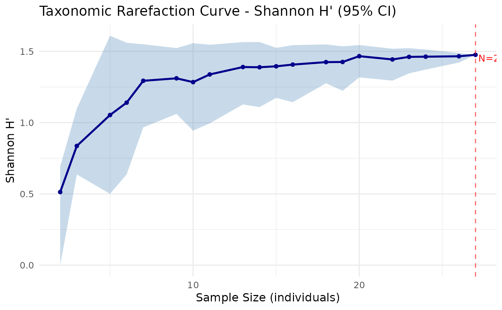

Visualises a rarefaction curve with confidence intervals using ggplot2.
Accepts output from rarefaction_taxonomic().
Usage
plot_rarefaction(
rare_result,
title = NULL,
xlab = "Sample Size (individuals)",
ylab = NULL,
ci_color = "steelblue",
line_color = "darkblue"
)Arguments
- rare_result
A data frame returned by
rarefaction_taxonomic().- title
Optional plot title. If
NULL, an automatic title is generated based on the index used.- xlab
Label for the x-axis (default:
"Sample Size (individuals)").- ylab
Label for the y-axis. If
NULL, determined from the index.- ci_color
Fill color for the confidence interval ribbon (default:
"steelblue").- line_color
Color of the mean line (default:
"darkblue").
Details
The plot shows the mean diversity value at each sample size as a solid line, surrounded by a shaded ribbon representing the bootstrap confidence interval. A vertical dashed line marks the total sample size (full data).
Requires the ggplot2 package.
See also
rarefaction_taxonomic() for computing the rarefaction curve.
Examples
# \donttest{
comm <- c(sp1 = 10, sp2 = 5, sp3 = 8, sp4 = 2, sp5 = 3)
tax <- data.frame(
Species = paste0("sp", 1:5),
Genus = c("G1", "G1", "G2", "G2", "G3"),
Family = c("F1", "F1", "F1", "F2", "F2"),
stringsAsFactors = FALSE
)
rare <- rarefaction_taxonomic(comm, tax, index = "shannon", n_boot = 50)
plot_rarefaction(rare)

# }